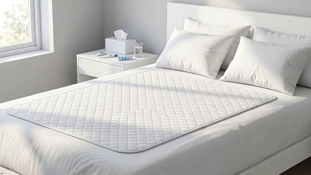
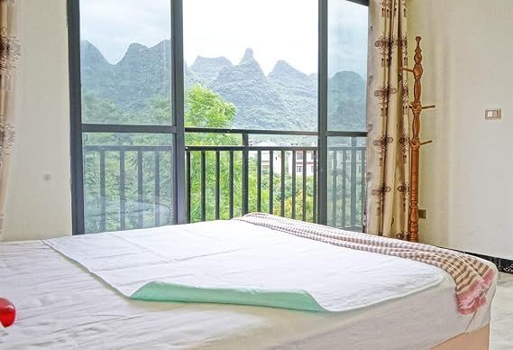

最重点セグメント
高齢者・在宅介護
失禁、術後、寝たきりの在宅介護でのベッド保護。
見てみるファミリー
赤ちゃん・子ども
おむつ替え、おむつなしタイム、おねしょ、トイレトレーニング。
見てみる
ホーム
家具・車いす・旅行
ソファ、リクライニングチェア、車いす、チャイルドシート、ホテルのベッド。
見てみる
B2B
介護施設
介護施設、病院、ホスピス、リネンレンタルプログラム。
見てみる
女性の健康
産後・生理の夜
出産後や経血量の多い夜も安心して眠れる。
見てみる
ドライブ
車のラゲッジ
濡れた犬、泥だらけのブーツ、ビーチ用品、食料品の液漏れからカーペットを守る。
見てみる
レジャー
アウトドア・キャンプ
ピクニック、キャンプ、ビーチ、スタジアム席に。防水面を下にして使います。
見てみる仕様マトリクス
用途別の推奨仕様
| 用途 | グレード | 表地 | 裏面 | 人気サイズ |
|---|---|---|---|---|
| 大人の失禁、ベッド | スタンダード / ヘビー | 綿混 | 滑り止めまたはウイング | 34×52, 34×36, 34×76 in |
| 寝たきり / 認知症ケア | ヘビー | 綿混 | 差し込みウイング | 34×36 / 34×52 in + 46×86 cm ウイング |
| おむつ替え / ベビーベッド | ライト | 竹 / 綿 | 平滑 | 18×24, 24×36 in |
| おねしょする子ども | スタンダード | 綿混 | 滑り止め | 34×52 in |
| 車いす / ソファ | ライト / スタンダード | 綿混 | 滑り止め | 18×24, 24×36 in |
| 車のラゲッジ / 荷室 | スタンダード | ポリエステルニット、濃い色 | 滑り止め | 34×52, 36×60 in |
| アウトドア / キャンプ | ライト / スタンダード | ポリエステルニット、速乾 | 平滑（TPU 面を下に） | 36×60, 24×36 in |
| 介護施設 | ヘビー | ポリエステル主体 | 平滑 / ウイング | 34×36, 34×52, 34×76 in |
日本・米国向けプランからのマーケティングのヒント：対象ごとに専用の商品ページやランディングページを用意しましょう。「高齢者＋赤ちゃん＋ペット」を1つのタイトルにまとめると、キーワードの関連性と信頼性が薄まります。
市場
高齢化する市場で成長するカテゴリー
人口の高齢化、在宅介護、ネット通販、サステナビリティが、米国・ヨーロッパ・日本で洗える防水シーツの需要を押し上げています。


洗える防水シーツのラインを立ち上げませんか？
販売市場、サイズ、数量をお知らせください。1営業日以内に仕様書と数量別価格をお送りします。